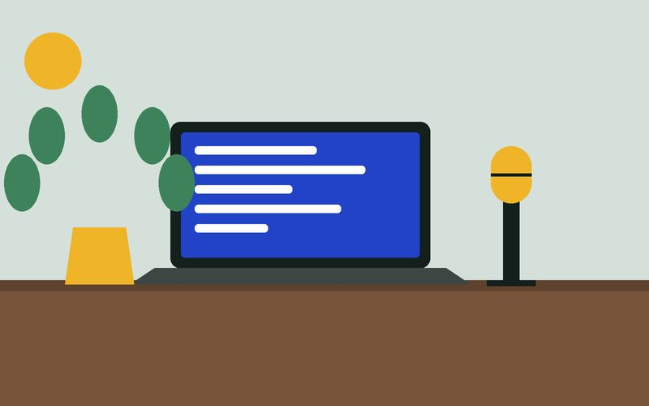

About
I spend my days checking that forms, menus and charts make sense for everyone who meets them. I like plain HTML, honest labels and pages that load before you notice.
- Focus
- Accessible front-end development
- Also
- Field recording and sound design
- Tools
- HTML, a screen reader, a small microphone
Listen: a ten-second sketch
A short piano-style melody I composed for this page.
Description: a slow, gentle sequence of single notes over a soft, steady hum. There are no words.
Watch: a six-second hello
Text alternative for the video
On a blue background, rows of yellow bars rise and fall like a sound wave. The name “Temi Adeyemi” fades in at the top left, with the line “Accessible web builder and field recordist” below it. The soundtrack is the same melody as the audio sketch above. Nobody speaks.
Where I work
